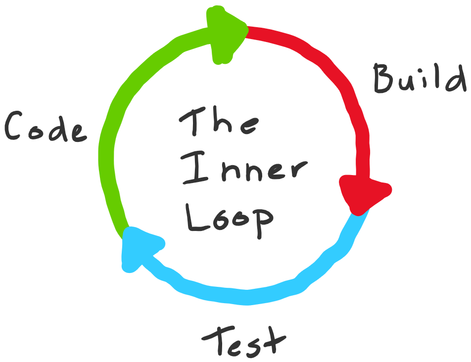

Welcome to this CodeLabs where we will dig into the concept of the Inner Loop in development in a containerized environment and how we can use Skaffold to speed up this loop.
The inner loop can vary a lot depending on the stack you are working on but, usually, it starts with you making a change in the codebase, then somewhat building some assets, trying out your change, iterating on that loop for a while then committing and pushing your code. Once your code is pushed it can go to the outer loop (peer review, continuous integration, tagging, etc.).

Image from Mitch Denny's blog.
I didn't find who was the first to introduce the concept of inner loop but it's usually there that people draw a line in their responsibility with a code change. Arguing that the outer loop needs to be handled by an ops team.
Fortunately more and more people are embracing devops practices and are willing to improve their dev/prod parity
This codelabs is an attempt at implementing an inner loop that makes the development team aware of their responsibility by enabling them to have a similar setup than the production area to minimize the time to market of modern applications.
In this CodeLab we will:
I want to emphasize that you should take your time to play with each tool on your own. I'll guide you during this code lab through a path but you can totally make stops at any step to dig deeper into each component.
You will mainly need a Kubernetes cluster. While it's totally ok to use any cloud provided Kubernetes cluster like GKE, I would recommend using Minikube to mimic the inner loop as closely as possible: as a developer you probably don't want to rely on the internet to make progress on your app.
You will also need the Skaffold and Helm binaries and Docker (Minikube includes Docker) for the first part. We will use the docker binary directly in order to demonstrate the starting point of inner loop.
You will need to install:
They can all be simply grabbed as simple binaries or through a package manager depending on your setup. I'd recommend downloading the binary directly as the package for your distribution might be slightly outdated.
Once you've setup Minikube you should be able to start it:
$ minikube start 😄 minikube v1.2.0 on linux (amd64) 💡 Tip: Use 'minikube start -p <name>' to create a new cluster, or 'minikube delete' to delete this one. 🔄 Restarting existing virtualbox VM for "minikube" ... ⌛ Waiting for SSH access ... 🐳 Configuring environment for Kubernetes v1.15.0 on Docker 18.09.6 🔄 Relaunching Kubernetes v1.15.0 using kubeadm ... ⌛ Verifying: apiserver proxy etcd scheduler controller dns 🏄 Done! kubectl is now configured to use "minikube"
Also, in order to use the same docker socket when you build docker images using the docker CLI, you have to configure your docker environment to use minikube's one:
eval $(minikube docker-env)
Helm needs to setup a server component on the cluster, named Tiller. Do it with the following command:
helm init
The code that we will use in this CodeLab is available on my Github account, download it using the following command:
git clone git@github.com:ClementGautier/codelab-k8s-skaffold-helm.git
You can also download it directly from here:
As you fetched the code you might have realized that the application looks pretty "light". In fact it is composed of a single page app written in JavaScript (React) that makes a call to the backend API written in Python (Starlette) and displays the result.
Our first goal will be to:
Now that you have the source code we can start playing with it. Launching the app should be as easy as a kubectl apply... but wait, we need to build the images first:
docker build -t k8s-skaffold-backend backend docker build -t k8s-skaffold-frontend frontend
Then you will need to deploy the services in your local cluster using the following commands:
kubectl apply -f backend/k8s kubectl apply -f frontend/k8s
Then, in order to actually see the application you will need to forward the service port on your host machine (in two different terminals):
kubectl port-forward service/backend 8000 kubectl port-forward service/frontend 3000
After that you should be able to see the app in your browser at the URL http://localhost:3000
You can see a piece of JSON: this information comes from the backend itself. Going to the following URL http://127.0.0.1:3000/version you can see that there is an issue that we need to fix: the version should be displayed.
Backend version:
Should definitely be
Backend version: 1
Having a look at the container logs on the frontend side you can't see much as the issue happens on the client side:
127.0.0.1 - - [06/Aug/2019:14:13:17 +0000] "GET / HTTP/1.1" 200 2010 "-" "Mozilla/5.0 (X11; Linux x86_64) AppleWebKit/537.36 (KHTML, like Gecko) Chrome/73.0.3683.75 Safari/537.36" "-"
But, looking at the backend container we can see something weird:
127.0.0.1 - - [02/Aug/2019 14:12:57] "GET /vesrion HTTP/1.1" 404 -
It definitely looks like a typo in the URL to fetch the version. Let's fix that.
This part will probably be unpleasant but here we are: try doing it on your own! It should not be hard, we diagnosed that it is a typo on the frontend code calling the backend. I want you to experience first hand what it takes to test a fix with this setup.
Hint: you need to:
As you probably noticed, having to rebuild the docker image by hand each time we want to test a change is pretty frustrating. The fact that we also need to port forward on our local host on specific port isn't really portable and takes time to restart when the pod changes.
An important point to keep in mind is that the docker images we use should be production ready, thus usually provide less logging or debugging potential than your usual environment. This the main caveat that docker users face when it comes to dev/prod parity.
The goal of Skaffold is to automate the inner loop. It will watch the source code for any change, rebuild the docker images when needed and update the Kubernetes deployment to use the latest source code.
I have already setup the configuration files of Skaffold for you but we will take some minutes now to review the parameters: open the file skaffold.yaml located at the root of the source code.
The first thing that you can see is that we describe "profiles" inside this configuration. We are using profiles in this case to switch between dev mode (hot reload/fast inner loop) and prod mode (nginx, no debug).
There are two approaches when it comes to development docker images, you can use different docker images or use multistage.
The dev profile of the backend application in this example is configured to make use of a specific docker stage (named target) and reflect the multistage strategy (even if in this specific case the content of the Dockerfile doesn't really make good use of the multistage process, it's more a proof of concept rather than a perfect Dockerfile).
The dev profile of the frontend application, on the other hand, makes use of a totally different Dockerfile. Both approaches have pros and cons, pick the one that feels right for your use case.
Look at the Dockerfiles now to see the difference between the stages. You will see that each profile answers specific needs like hot reload for development environment.
Each profile defines its builder. We use the default "docker" builder but keep in mind that there are other solutions like Google Cloud Build, maven, bazel and more.
You can see that, in the dev profile, we also use the sync builder that will synchronize files automatically, allowing us to do hot reload without needing to rebuild the whole container. This is a big advantage of using skaffold!
Each profile also defines it's deployer. This describes the "how" to respond to a code change. You can see that we are using kubectl in dev and helm in prod. We could also have used kustomize instead.
Finally, the port forwarding section allows us to define which service we would like to have exposed directly on our host. This will fasten the inner loop we experienced by doing that part automatically and also act as a way of unifying process in your team.
Now that you are familiar with the profilessetup, launch the app using the following command:
skaffold dev --profile dev --port-forward
You can see that this will rebuild your docker images but only the stages specified by the dev profile and using the specified dockerfiles. You will then be prompted the port used for the port forward:
Port forwarding service/frontend in namespace default, remote port 3000 -> local port 3000 Port forwarding service/backend in namespace default, remote port 8000 -> local port 8000
You can now open your browser and go to http://localhost:3000/ and you should see the application.
Now that our app is managed with Skaffold, try modifying the backend or frontend and see what happens:
Put back the bug we had in the first section: modify the version component in the frontend so that it targets an unknown path on the backend.
You can see that, right after you save your file, there is a file sync happening and a hot reload of your frontend development server. Here are the bugfix logs:
[backend-55b85f75c5-rx9zh backend] INFO: ('127.0.0.1', 41574) - "GET /vesrion HTTP/1.1" 404
Syncing 1 files for k8s-skaffold-frontend:6f1f2cae47837aa4cecb0e3a7342b27df29ec0744cf3b62a6a318af9c4824ed5
Watching for changes...
[frontend-7688ff79f8-nlwnv frontend] Compiled successfully!
[backend-55b85f75c5-rx9zh backend] INFO: ('127.0.0.1', 41710) - "GET /version HTTP/1.1" 200
This happened without a docker rebuild: it is the fastest we can get to a non containerized environment.
You can try the same thing on the backend application: try modifying the version on the version.py file (you can even try to generate a runtime error to see what it is like to have the application in a debug mode!)
Having a really fast inner loop with a containerized environment feels great but what we want in the end is to be production ready! In this section we will see how you can configure your environment to be as close to the production environment as possible.
In this section we will use the helm deployer to showcase what it's like to use a packaging solution with Skaffold. I recommend, if possible, using the same deployer strategy between your dev mode and prod mode as it will help you spot deployment issues as soon as possible.
In order to deploy the application like you would on production you want to use an Ingress controller that acts as a reverse proxy and not rely on port forwarding. In order to do so with minikube you will need to enable the ingress plugin as follows:
minikube addons enable ingress
This will provision an nginx ingress controller and let you use Ingress' resources like you would in a live environment. You will also need to point the DNS record to your cluster IP. You can do that simply by adding the minikube IP to the hosts file:
echo "$(minikube ip) k8s-skaffold-frontend.local k8s-skaffold-backend.local" | sudo tee -a /etc/hosts
Once that's set up, you should be able to run skaffold prod profile:
skaffold dev --profile prod
After a short time you should be able to access the application at the following locations:
Note that this profile doesn't make use of file syncing or hot reload because the images are optimized for production usage. You can still perform updates and it will trigger a build and deploy process since we use the "skaffold dev" command but it will rebuild the docker images thus taking more time.
This is the tradeoff of using the same environment as the production one, but at least you have the ability to switch to dev mode if you need a faster inner loop.
Try updating the code and see the difference with the dev profile.
The helm package is designed for production usage: the deployments are replicated so that you don't encounter downtime, which is always nice to have.
It's a good opportunity for you to test that: while pinging your frontend try to trigger a change. In a terminal launch the following command:
watch -t -n 0.1 curl -s http://k8s-skaffold-backend.local/version
This will curl the backend every 100ms and display the result.
Try it on your own: make a change on the backend version.py file: you shouldn't get any 404s ;)
Note: you will also see that during the deployment since there are multiple frontends, you will get randomly the new and old result: this is a proof that the rolling update is working properly.
Until now we used only one command: `skaffold dev`. This is the main command you will use to work with hot reload but considering that we could use Skaffold in our outer loop (using a continuous integration system for example) or directly to deploy our app on another cluster it makes sense to have more control over the workflow.
There are three commands that you should know:
The "skaffold build" command allows you to... build the artifacts defined in the Skaffold configuration file. This is useful if you want to simply build your docker images and push them on a registry for example.
This step could easily be a step on its own in a CI pipeline or simply be used to control that the artifacts are buildable.
The skaffold deploy command will deploy the latest artifacts that were built. Basically, in a continuous integration process you might want to make a pause before this step for a manual check first.
The skaffold run command combines the build and deploy commands. It is, basically, the dev command without the file watcher. This command is very powerful combined with the "--tail" option, allowing to display the logs of everything deployed by skaffold.
If you used minikube you can simply run the following command in order to destroy your cluster and everything deployed on it:
minikube delete
If you want to keep your cluster running and remove everything Skaffold deployed, you can use the following command:
skaffold delete --profile dev skaffold delete --profile prod
Congratulations on completing this course! I hope it helped you understand the benefits of Skaffold and hopefully increase your productivity in the future.
If you want to go further, I highly recommend the Skaffold documentation. There is, for example, an entire topic that we did not cover: the skaffold debug command which determines the underlying technology of your docker image and configures your development environment accordingly.
Another topic we did not discuss is the Testers: they allow you to add checks in your skaffold loop to enforce the container file structure using container-structure-test. This is another powerful way to standardize the way you work with containers.
Also, if you had any issue doing this codelab, please open an issue on the github repository: